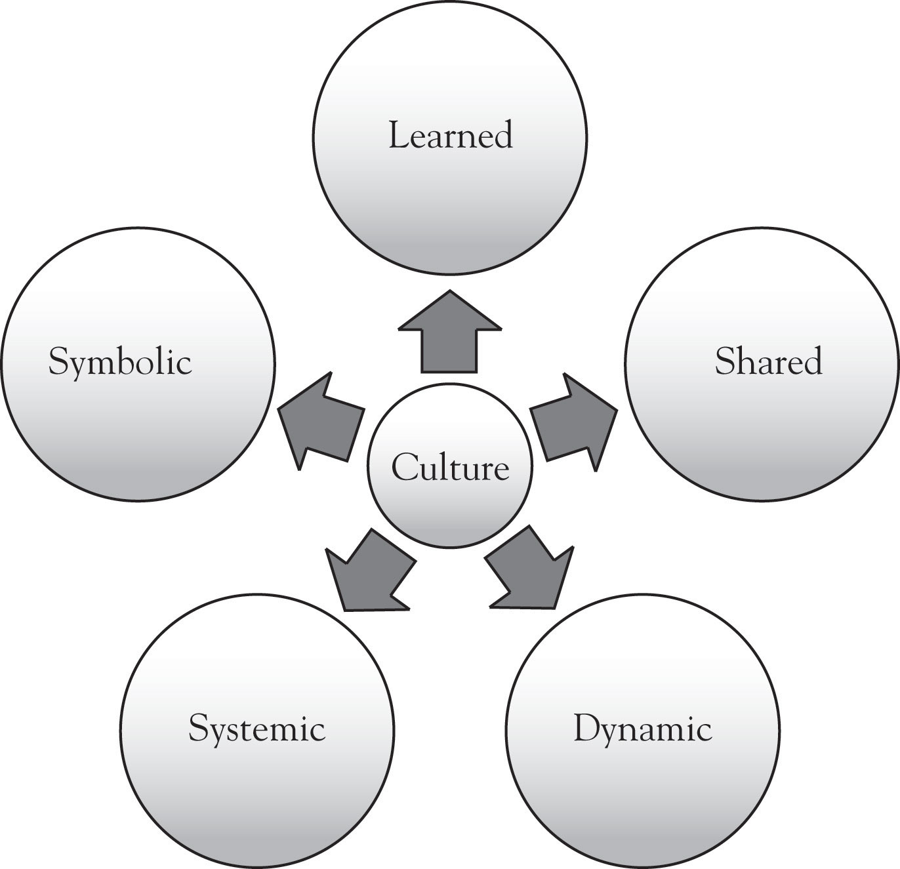
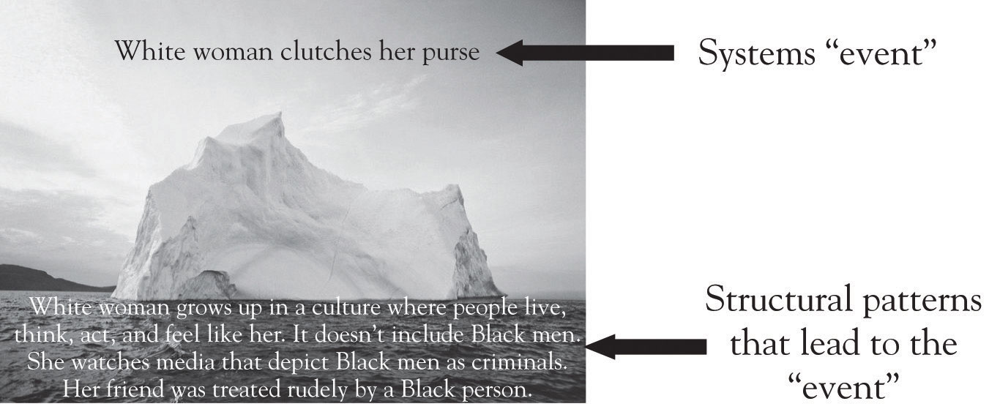
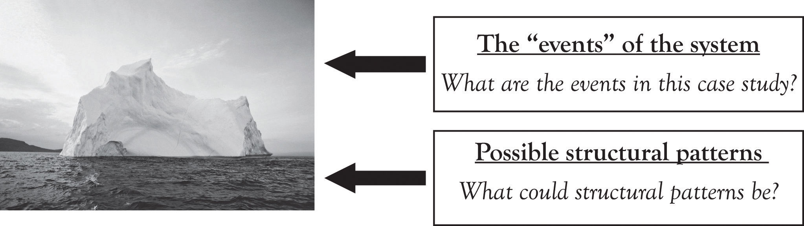
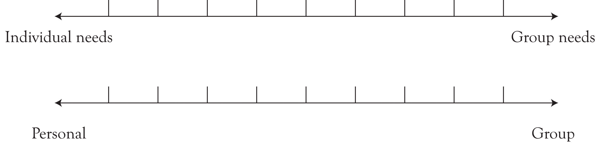
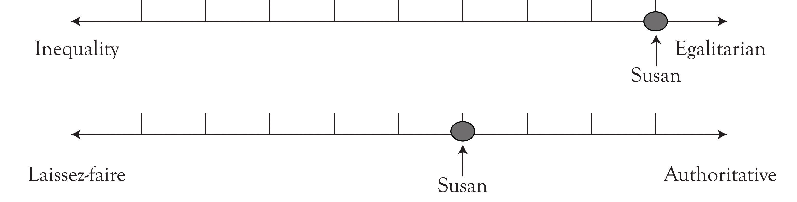
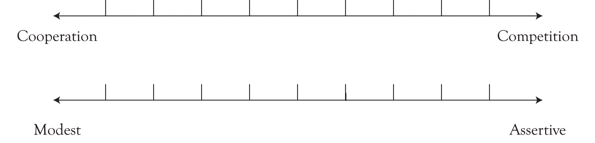
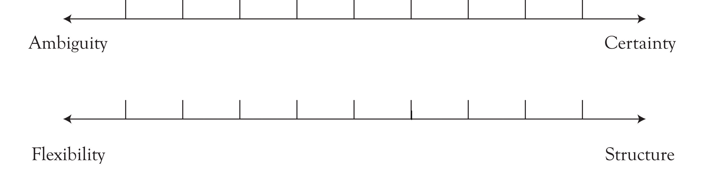
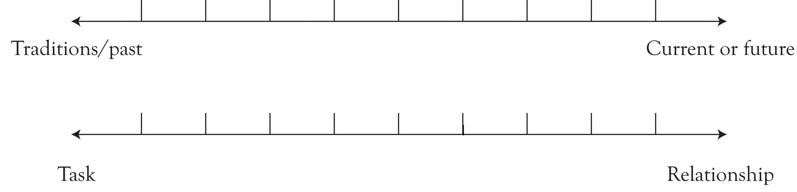

When my parents came to the United States in 1979, their world became vastly different than what they had known. Before their arrival, they lived in a small hilltop, tribal village in the mountains of Laos, like many of their ancestors before them. They had the simplest tools for doing their work and for living their lives. The natural world provided everything they needed. If they wanted to use the bathroom, they went outside—not to an outhouse but to the woods. When they were hungry, they cooked the meal in a pot over a large fire pit. When relatives asked them to attend celebrations and notified them that the celebration meal would begin sometime when the sun was to set, my parents knew that the path of the sun would let them know when they should leave their house.
There were a lot of assumptions my parents made about their world. When they had to relocate to the United States, they found out how different their assumptions were when they were tested in an environment that contradicted their ways of being. They were not aware of a different way of living their lives, because the norms that shaped their lives influenced their actions and behaviors. The norms helped them to learn that what they did was the correct way to live.
One of their most difficult challenges was to unlearn what they knew in a different context and with different materials and tools that they did not have before. What naturally occurred was a process of culture shock and then a period of acculturation. When my parents’ sponsors showed them how to use the toilet by gesturing what to do and how to flush, my parents were embarrassed. Coming from a culture where modesty is important, they did not know how to respond to the American sponsor’s gestures, yet their embarrassment quickly turned into fascination when they saw how a toilet could dispose of materials.
Interpreting body language became a critical piece of adaptation and learning. My parents found the exaggerated gestures of their sponsors turning on and off the stove “different.” But it was paying attention to the facial gestures and body language that helped them to understand how to operate a stove. They realized certain things were the same across cultures: taking out a pot to boil water, placing it on a heated surface for the water to boil, taking the pot off the surface to let the water cool. The differences, they noticed, were in the equipment used and the timing of the water boiling. What a surprise it was for them to realize that one could adjust and control temperature!
As human beings who are accustomed to behaving (consciously and unconsciously) in specific ways, we often do not recognize another perspective until it is presented to us. Ellen Langer,Langer (1990). a social psychologist, says that it is in the perspective of another that we learn to see ourselves—to see who we really are. As an educator and facilitator, I meet people in positions of leadership every day who believe that their perspective about culture and how they should work with differences is the right way and that there is no other possibility for a different way of working or thinking. For example, a participant in my training session, Jacob, felt very strongly about the “invasion” (his word, not mine) of immigrants in his neighborhood. As a result, the city he worked for was increasingly diverse and would need to set up services and programs to meet the needs of the new immigrants.
As a native of the city, Jacob felt strongly that his neighbors needed to assimilate more quickly. As a city employee and manager, he felt excluded that the city would create new services for the immigrants. His issue of conflict here was that he had developed proposals for expanding current services in his department, but they were never approved, mostly because of budgetary reasons. He did not understand why creating “special services for a small population” mattered more than the services for current residents of the city, and he was angry that the funds set aside for the new programming would be large, much larger than his proposed changes.
Jacob, in this example, is bound to his single perspective or viewpoint. He cannot see beyond the situation. And, in fact, when discussing this situation with Jacob and other managers present, other pieces of the story began to unravel. Yes, Jacob had a perspective about immigrants based on his experiences with one immigrant–his neighbor. He used his knowledge and interactions with this person to generalize to an entire population. Additionally, what really mattered to him in his place of work was that he did not feel his ideas mattered. Because every time he proposed changes they were not approved, he took that as a deliberate attack on him. This was not the case at all and he was told this by his peers in the training.
When Jacob was presented with another perspective, he let his guard down. Over time, he was able to focus on the real issue, which was that no matter what your status, creed, ethnicity, or reason for moving to the United States, as a public sector employee it was his role to provide the appropriate services that would meet the residents’ needs.
As leaders, we must make strong efforts to see a different perspective than what we believe and hold to be true. We must challenge ourselves, as Byron KatieKatie (2002). says, by asking whether we know what we see to be true is really, in fact, true. And if it is, how do we know that? What stories have we told ourselves? To understand this, we need to look at the “roots of culture” and how our cultural systems have shaped our realities of the world.
Imagine a tree as a metaphor for a cultural systemThe grouping of a culture’s rituals, traditions, ceremonies, myths, and symbols.—all the things that make up who you are. The roots of a tree are essential for the survival of the tree. They carry the nutrients needed for the growth of the tree and store nutrients for later feeding. Roots of trees are generally located in the top 6 to 24 inches of the ground, not too deep from the surface. The roots are impacted by their surrounding, and environmental factors contribute to their health and vitality.
Just like the roots on a tree, cultural systems have roots that are impacted by their surroundings. A culture’s rituals, traditions, ceremonies, myths, and symbols provide it with the nutrients it needs to survive. Environmental factors can change a tree by uprooting it or letting it die off, making space for new life in its place. Similarly, environmental changes impact cultural systems, forcing it to adapt and change to its surroundings or transition into death, creating new cultural stories that carry new life.
But unlike trees and their roots, we get stuck in our cultural systems and do not budge even when our surroundings have changed. Trees, like anything in an ecosystem, have natural cycles of renewal and rebirth. Sometimes this renewal and rebirth is gradual and gentle, while other times it is fast, disruptive, and violent. Trees, because they share their environments with others, will learn to adapt and allow change to occur, no matter what the direction of change may be. Change in their cultural environments is inevitable and a part of the life cycle.
In similar ways, we can think about our cultural systems as part of a larger system. Some cultural anthropologists would describe the cultural systems as “big C” (macroculture) and “little C” (microculture). The macrocultureA larger cultural system. refers to a larger cultural system, for example, Catholicism is a culture that is not bounded by geography. Within the macroculture of Catholicism are smaller units of culture called subcultures. Change is constant in each cultural system, and transitions, renewal, and rebirth are endless cycles. As cultural shifts occur in the macro- and microculturesA smaller unit of culture; often referred to as a subculture., small and large, gradual and disruptive, the entire system learns to adapt in different ways.
Definitions of culture cover a wide range of perspectivesIdeas or point of view based on one’s experiences and background.. When I ask participants in my business workshops to describe culture, the following are words and phrases they use: food, religion, language, music, region or geography, ethnicity, clothes, and so on. Generally, there is always one person who raises his or her hand timidly and says, “I think culture is more than that. It’s the things we don’t see, like our beliefs or views about gender.” Both are correct—culture represents the things we see, the tangible, as well as the intangible things.
Figure 2.1 Iceberg Metaphor
The iceberg, a commonly used metaphor to describe culture, is a great example for illustrating the tangible and the intangible. When talking about culture, most people focus on the “tip of the iceberg,” which is considered as making up 10% of the object. The rest of the iceberg, 90% of it, is below the waterline. Most leaders in businesses, when addressing intercultural situations, pick up on the things they see—things on the “tip of the iceberg.” This means that they never address the cultural issues and problems that are underneath the surface level. Solutions become temporary band-aids covering deeply rooted cultural systems.
I once had a manager describe and define culture as “a monster.” After some laughter from the group, he clarified his statement: “It’s so messy and sometimes it’s too big to handle. And, it’s scary because you don’t know what you’re dealing with.” What he said rings true for many people and businesses that work in multicultural settings. It is certainly not fun to clean up cultural messes, bloopers, or misunderstandings, and when not addressed right away, they can result in large cultural conflicts. The ability to acknowledge one’s cultural mistakes, and having a commitment to learning what culture brings, is a skill that one must have in cultural intelligence work.
This definition of culture as a “monster” is one that looks at culture and its manifestations. Some may even say it is negative and does not paint culture in a positive light. From my experiences working with leaders, defining culture is not about positives or negatives—culture just is, and that is why it can be a challenge to describe it. Definitions of culture usually incorporate an expression of values and beliefs of groups, the learning that occurs in groups, and the expressions of those cultural norms.
The following is a definition of culture that is used in this book and that will be useful in your work:This definition of culture has been adapted from Edgar Schein’s definition of culture.
Culture consists of the shared beliefs, values, and assumptions of a group of people who learn from one another and teach to others that their behaviors, attitudes, and perspectives are the correct ways to think, act, and feel.
It is helpful if you can think about culture in the following five ways:
Figure 2.2 Elements of Culture
Geert HofstedeHofstede (1991). views culture as consisting of mental programsAn individual’s patterns of thinking, feeling, and potential acting that have been learned throughout his or her lifetime. Sometimes referred to as softwares of the mind and mental models., calling it softwares of the mind, meaning each person “carries within him or herself patterns of thinking, feeling, and potential acting which were learned throughout their lifetime.”Hofstede (1991), p. 4. Similarly, Peter SengeSenge (1990), pp. 8–9. argued that mental models lock individuals and groups into a specific perception about the world. Like a computer, we are programmed to act or behave in certain ways. The conscious and unconscious learning we undergo, over time, turns into beliefs that we consider to be valid. We then teach each other that these beliefs are cultural norms, and they are then expressed in our daily lives as behaviors and actions.
Think about your first day with your current organization or one you worked for in the past. Typically, your boss or a co-worker gave you an orientation to the company, describing its mission, products, and services. Most likely, you met your co-workers and received a tour of the office facilities. Perhaps you met and talked with co-workers to get a sense of how your job related to their work. Maybe you spent time reading company materials, reviewing your department files, or talking with your supervisor about the details of your job responsibilities. Perhaps you had lunch with other staff members and were told about some parts of the organization such as, “Jane Doe should be fired but is still working here,” “The CEO has control issues,” or “The fax machine breaks down three times a day.” Whatever you did in those first hours or days of orientation and training, you created an image of how you would fit into the company. In that moment, you told yourself a story of how you would work with the company and how it would work with you because others in that business culture told you how you needed to behave. This moment is so powerful that it shapes your experiences, including your thoughts, actions, behaviors, beliefs, and attitudes for the rest of your time with the company.
Ming is a recent college graduate with a degree in accounting. She has taken a job with a large accounting firm. Although she gets along with members of her department and team, she tends to spend her free time with other colleagues who are of Asian descent, especially those who are in her generation. She feels that this group of coworkers understands her better and shares her values and ideas around work–life balance.
John has been with his state employer for thirty years, working up the ranks into seniority in his state agency. It’s been customary for him and six coworkers of his age group to meet for lunch every day and discuss the latest sporting events. Once a week during the summer they meet up after work to play baseball at a local park and recreation site.
These two examples describe culture as a shared learning experience. Although you may think of yourself as an individual, you share beliefs, rituals, ceremonies, traditions, and assumptions with people who grew up or live in similar cultural backgrounds. It is easier for you to relate to someone who has shared value systems and ways of doing things than someone who does not share the same values.
The patterns of culture bind us together and enable us to get along with each other. Even though it feels good to be around people who think, act, and behave as you, shared learning can create blind spots. Shared cultures create a dynamic of an in-group, where people segregate themselves from each other. Within teams in organizations, in-group blind spots can lead to “group thinkA group dynamic in which the pattern of thinking conforms to the group’s values.,” a term coined by Irving JanisJanis (1973), pp. 19–25. to explain the ways in which groups ignore alternative solutions and take on actions and behaviors that discount the experiences for others.
Culture is dynamic and thus complex. Culture is fluid rather than static, which means that culture changes all the time, every day, in subtle and tangible ways. Because humans communicate and express their cultural systems in a variety of ways, it can be hard to pinpoint exactly what cultural dynamics are at play. Consider, for example, a conversation about a person’s attitude or feelings. In this type of conversation, Albert MeharbianMeharbian (1971). found that people pay attention to (a) the words, or what is being said; (b) the tone, or how the words are said; and (c) the visual behind the words, often called the body language. All of these are aspects of culture that are interpreted differently depending on the cultural context. Add multiple layers of culture to the conversation—such as time, power and authority, emotion, age, gender, religion, nationality, and even previous intercultural interactions—and communication at a cross-cultural level becomes complex and hard to manage. The following is an example of the dynamism of cultures:
Sheila is the director of marketing for a social services agency. She provides feedback to one of her managers about how to improve services. Sheila sits behind a large executive desk and is leaning forward. The employee sits with her arms crossed, leaning away from Sheila.
If you were observing this scene, are you able to tell from the body language what each person is thinking? Why or why not? What cultural factors might be present?
In the example, Sheila’s body language can be interpreted as any of the following: eager to assist or help, intensely interested in what the employee has to say, aggressive and wanting more information, or needing deeper engagement in the conversation. Her employee’s body language could mean any of the following: protective, suspicious, not caring, or relaxed. To understand the dynamics of culture in this example, you would need to pay attention to the things you do not see such as:
In systems theory, systems are interrelated, interconnected parts that create a whole. There are patterns of behavior, deeply rooted structural systems, which are beneath the waterline. What we see at the top of the iceberg are the behaviors; we do not see what contributes to those behaviors. Consider, for example, a white woman walking down a quiet street. She quickly clutches her handbag closer to her body as she passes a black man. Then, when she spots a white man walking toward her, she loosens her hold on the purse.
To address the system, one must be able to address the underlining patterns. These patterns, because they are deeply embedded in the system, will take up significant effort, time, and resources. Changes to the system are slow and gradual; visible changes may not appear until months, or even years, later.
Because most leaders spend their time evaluating and finding solutions to an “event,” they revisit the issues over and over again, with no positive and sustainable results. The following case study illustrates the systemic nature of culture:
Figure 2.3 Culture from a Systems Approach
Langley, Knox, and Cooper, a law firm in the Midwest, knows that it has to do more to be inclusive to women attorneys. It has met challenges in retaining its female work force. The majority of women hired to work at the firm leave within a three year period. To address the issue, the firm provides gender sensitivity training to the entire company, attends graduate career fairs to actively recruit female attorneys, and has quotas for promoting women. However, the efforts in the past five years have yielded little results.
Langley, Knox, and Cooper focus much of their attention on the “events” of the system: women leaving after three years or providing gender sensitivity training. A look at the structural patterns reveals a more complex issue that cannot be solved through training and career fairs. The structural pattern is an insidious belief that women enter the law profession with the same opportunities and access to practicing law as men in the firm. Underlining this belief are more patterns of thought that keep this structural pattern in place. Possible patterns of thought could be:
Figure 2.4 A Systems Approach to Find Structural Patterns in Gender Conflicts
Understanding the thoughts help leaders to recognize that yearly gender sensitivity training would never work. These thought patterns, when combined and supported (intentionally or not), are difficult to unravel. The systemic nature of the problem becomes more complex and chaotic as time goes by and the issues are not addressed.
SymbolsVerbal and nonverbal representations that link human beings to each other. Because the meaning attached to symbols is arbitrary, different interpretations of a symbol can occur in different cultural contexts. are both verbal and nonverbal in form within cultural systems, and they have a unique way of linking human beings to each other. Humans create meaning between symbols and what they represent; as a result, different interpretations of a symbol can occur in different cultural contexts. Take, for example, a meeting of senior executives who need to make a decision about a new service. This group of leaders has a team culture that orients itself toward a democratic process: decision making is based on one vote from each member. Now imagine a similar group of leaders with the same task but, this time, the group of leaders is comprised of Native Americans. Leaders who are younger in the group ask their elders for advice. This is an example of how cultural systems differ in their interpretation and expressions of culture. In some cultural systems, voting is not an option. The symbol of a vote has different meanings and interpretations—or simply may not even exist in any practical sense—depending on the cultural background.
One of the things that can happen in the context of discussing culture is falling into the stereotypes and generalizations of a cultural group or norm. It is important to recognize the difference and the impact these factors have in cultural interactions. In general, stereotypesStatements and interpretations, usually negative, made about a group of people which limit that group to specific perspectives. are negative statements and interpretations made about a group of people. Stereotypes, whether deemed positive or negative, place people into boxes and categories and limit them to those specific perspectives. A stereotype, such as “Asians are good at math,” does not provide the complete picture someone needs to understand the Asian culture or the differences between Asian cultures. Similarly, just because you meet a 70-year old who does not know how to use current technology, it does not mean that other individuals in that generation do not know how to use it.
By contrast, generalizationsBroad statements, either valid or faulty, that are based on facts, experiences, examples, or logic. of cultures are broad statements based on facts, experiences, examples, or logic. There are two kinds of generalizations, valid and faulty, and it is your role to determine which generalizations have validity behind them. Broad characterization of cultural groups can serve as a framework for cultural interactions. For example, Hispanic societies have a high degree of machismo, or, in Middle Eastern cultures, women have a lesser status than men—these types of generalizations are helpful when engaging with people of those cultures. But in all cultural interactions, culturally intelligent leadership requires you to recognize that generalizations do not apply to everyone within a cultural group.
One of the basic tenets of culture is that it consists of levels and sublevels. It is useful to think about culture in terms of five basic levels: national, regional, organizational, team, and individual. Within each of these levels are tangible and intangible sublevels of culture.
A businesswoman from the United States is in Germany for contract negotiations between her employer and a large German bank. The meeting is scheduled for nine o’clock in the morning. When she arrives to the meeting a few minutes before its start time, she is amazed that all her German counterparts are already seated and ready to begin the meeting. A few days later, upon her arrival back to the United States, she remarks to her American colleagues her experience with German culture. In particular, she notes their level of attentiveness to punctuality and planning and says, “I thought we were punctual here in the U.S.! It’s nothing compared to how Germans view punctuality.”
This example illustrates the national differences between two cultures: American and German. National differences refer to the cultural influences of a nation that result in its national characteristics. Although nation-states have regional and political differences, national cultureThe values, largely unconscious and developed throughout childhood, that are held by a majority of the population within a nation. can be viewed as the values held by a majority of the population within the nation. These values are largely unconscious and developed throughout one’s childhood. The values are pushed to a level of consciousness when in contrast to another nation’s cultural values.
Within national cultures, values are generally seen as stable over time. National values, because they reflect the traditions of the nation-state over time, will change slightly from generation to generation, but the overall values will remain the same. For example, a German who comes from a culture of punctuality and travels for business in Italy will notice a national cultural difference in how Italians view time (more leisurely and relaxed) as compared to their own national culture.
An interesting thing about living in the United States is the regional differences that make each part of the country unique. When I attended college in Boston, I heard the expression “wicked” used quite often. After asking my New England friends what “wicked” meant, I learned that it was used to emphasize a point. If I attended a concert that I really enjoyed, I would say, “That concert was awesome!” New Englanders would say, “That concert was wicked awesome.” After living in the Boston area for 4 years, the word became a part of my vocabulary. When I used the word in conversations with my friends and family members in Minnesota, they did not understand what I meant.
All national cultures consist of regional subculturesA subgroup of a national culture in which the characteristics of that subgroup are distinguished from those of another subgroup. that influence the characteristics of one group from another in a nation state. The word “pop” refers to a soft drink in the Midwest, but if you go to the East Coast, it is referred to as “soda.” In other regions of the United States, a soft drink is referred to as “Coke.” The following is an example of regional cultural differences and one way the difference is expressed:
Dianne moves from Texas for a job opportunity in Georgia. She lives in Georgia for 25 years and feels that it is her home state. However, her neighbors and co-workers do not think that she is a Georgian. Even though Dianne thinks she is from the south, she is reminded by others that she is “not a southerner.”
Dianne experiences a regional cultural shift that she did not know existed until her move. Although she considers herself a Georgian, she is constantly reminded that she is not a southerner. At a conscious and unconscious level, her regional cultural experiences will dictate her thoughts about herself and others. She may develop the following assumptions and beliefs as a result of the regional cultural influences:
What are regional differences and similarities that you have experienced or have been a part of? The following is a chart to help you identify regional similarities and cultures. In the column labeled “Regional Culture Names,” write down two regions of a nation or country, such as West Coast and New England. Then, for each cultural expression listed, write down the regional similarities and differences you notice about each region you have chosen to identify.
Table 2.1 Exercise to Identify Regional Cultural Differences and Similarities
| Regional Culture Names | Cultural Expression | Regional Differences | Regional Similarities |
|---|---|---|---|
| Food | |||
| Dress code | |||
| Language | |||
| Housing | |||
| Music |
When you walk into a Target Store, what do you see? What does it look like? What kinds of items do they sell? What do you see when you walk into a Wal-Mart? What does it look like? What types of people shop at Wal-Mart? Who works there?
Shoppers have different experiences walking into a Target versus a Wal-Mart store because even though they are both retailers, their buildings are different, the types of products they carry vary from each other, the workers wear different clothes, the layout of a Wal-Mart store is very different from the layout of a Target store, and the behaviors expressed by workers in each organization are unique to each retailer. These elements give the organization its distinct culture that separates it from the other.
Organizational cultureA culture that is specific and unique to an organization, making that organization distinctive from competitors and non-competitors. speaks to the culture that is specific to an organization—the culture that makes it distinctive from competitors and non-competitors. Organizational cultures are often referred to as “corporate cultures” and reflect the beliefs, values, and assumptions of an organization. For example, the culture of one school in a school district can be different than the culture of another school located in the same district simply because of what the people in one school culture adhere and react to.
Lupe oversees a business division that includes sales people, engineers, research, and customer service staff. All teams work in different ways to accomplish their business strategies, but they also have work that is cross functional, relying on each other to get their work completed. At times, Lupe is overwhelmed at the teams’ cultural differences and the impact it has on productivity and sales. She knows that each team has their own working styles, but she didn’t realize how much these styles could interfere in the day to day operations of the division.
The sales department seems more outgoing and energetic than her engineers, who as a whole seem introverted and serious. Her researchers are detailed and scientific in nature, always questioning the tactics of the sales people. Her customer service employees who are by nature people and service friendly and always wanting to make sure everyone gets along. These departments work well, but Lupe knows that silos in the organization can hinder growth and creativity.
The example above illustrates culture at the team levelThe values, beliefs, and norms of culture exhibited on a team level.. The values, beliefs, and norms of culture are present in team environments, dictating the team’s operations and efficiency. Cultural norms in teams guide members in their dress and appearance, their language, how they relate to one another, and how they get along. Some teams are very serious, while others use humor in their work life. Departments, teams, or workgroups can, and will, act very differently from each other even though they are located in the same building and in the same organization. Although you might not think about personality or temperament as cultural elements, they can and do shape a team’s culture.
Individual cultural differences relate to your preferences for things through your personal experiences that include the influence of your family, your peers, school, media, co-workers, and so on. You may share a national culture, such as being an American, with another person and live in the same regional culture, the Midwest. You may even work with the person in the same organization and department, thus sharing an organizational and team culture, and even though you share similar interests, you will likely have differences in individual cultureIndividual differences that relate to an individual’s preferences for things based on culture and personal experiences, including the influence of family, peers, school, media, coworkers, and geographic region. based on who you are and your social upbringing. The following example illustrates these individual differences:
Bao, 31 years old and Hua, 32 years old, are both Chinese American managers living in San Francisco. They both grew up in the area as third generation Chinese Americans. Both attended universities on the East Coast in the same city and majored in public policy. Bao and Hua work for a national nonprofit that funds grassroots leadership projects in Chinese-American communities in the United States. Both work in the programming department of their organization and have been there four years each.
Bao and Hua, although similar in their cultural backgrounds, have different perspectives based on their individual cultures. Bao’s mother passed away while she was very young and she was raised by her father and aunts. Her father was not around because of long work hours. Bao, with the help of her aunts, raised her younger siblings. Her mother’s death was a significant event in her life as she felt she did not have the mother-daughter relationship that many of her peers did. As a result she is overly protective.
Hua is the youngest child in her family. Both her parents are still alive. Hua was raised around many of her relatives who took care of her while her parents were working. She has always been given what she wanted or needed. Whenever Hua had a problem, her older siblings took care of the situation. As a result, Hua is quite relaxed in her demeanor and approach to life.
When Bao and Hua make programming decisions, Bao approaches her decision-making process from a methodical and careful perspective, always looking out for the program’s and organization’s needs. Hua, on the other side, is more relaxed in her approach, more willing to allow for flexibility and ambiguity.
Bao and Hua’s cultural experiences have shaped them into different individuals and have impacted their managerial and leadership styles. Even though they share many similar cultural experiences, their individual cultural experiences have strong influences on them. Bao’s methodical and careful decision-making processes are a result of her having to be responsible at a very early age. Hua’s relaxed approach comes about because of her experiences as the youngest child and always knowing that she would be taken care of—that everything would be okay in the end.
These five levels of culture are important to think about and recognize, but it should also be understood that each of these cultures can be expressed in subcultures or microcultures. Not everyone acts or behaves the same in a national culture such as the United States. There are regional, county, and city differences within the national culture of being an “American.” There are religious differences as well as gender cultures, ability and disability cultures, cultures revolving around sexual orientation, and even cultures centered around concepts or states of being, for example, the culture of homelessness or the culture of juvenile delinquency.
Cultures show up in many forms and are expressed differently. Yet all forms and levels of cultures express and share three fundamental aspects: values, assumptions, and symbols.
You need to recognize that value systems are fundamental to understanding how culture expresses itself. ValuesPrinciples that guide individuals in their behaviors and actions. often serve as principles that guide people in their behaviors and actions. Our values, ideally, should match up with what we say we will do, and our values are most evident in symbolic forms. Consider, for example, a picture of the American flag. If you were an American, what words do the pictures evoke for you? Freedom, liberty, America, united, independence, democracy, or patriotism, perhaps?
What if a Nazi symbol were painted on the American flag? How would that make you feel? Disgusted, sad, angry, revengeful? What would the desecration of the flag symbolize? Hatred, terrorism, nationalism? What about freedom of speech? Symbols like the American flag evoke strong emotions for people, and when the symbol is desecrated, it can feel like a personal attack on the person’s value system and their beliefs about the world. It feels out of alignment from what we believe to be true—what we see as our reality of the world. This is because our values and beliefs are rooted in stories we tell ourselves over and over again.
Joseph CampbellCampbell (1988). noted that stories and myths are our psychological maps of the world. We use them to guide our thinking and behaviors, and when we do not like a story or it does not align with stories we know, we discard them. We learn through culture to create a story about the story. Campbell said that when we can unravel our stories, we begin to see the meaning we have placed on them and the impact they have on our lives. The case study that follows illustrates this notion of values:
James works full-time managing a fast food restaurant chain. Working extra hours every week helps him bring home more income for his family of four. He will do whatever it takes to help take care of his family. Ana is also a manager in the same restaurant. She works her forty hours a week and then goes home to her family of three. She doesn’t want to work more hours because she wants to spend as much time with her family as possible.
How does James’s perspective of family differ from Ana’s? What assumptions does each have about the value of family? What might be the stories they are creating for themselves that shape their values of family? Both individuals have the same value of family, but their values are expressed differently through their behaviors. A value such as family can be expressed and thought of differently from one culture to the next or from one person to the next. James believes that working hard illustrates his value of family, while Ana believes that spending time with her family demonstrates her commitment to the value. These assumptions are not expressed verbally, and, in some cases, the assumptions can be unconscious. Notice how, in the following scenario, James’ assumptions are challenged:
Both Ana and James receive a bonus for their work. James finds out that Ana has received the same percentage of bonus that he has. He’s quite upset because he knows that he works more than she does and sometimes covers her shifts when she has family emergencies or is late because of day care issues. He thinks to himself, “How could she get the same bonus as me? She doesn’t even work that hard and she comes in late to her shift using excuses that her day care didn’t show up again.”
In the case study, the assumptions that James has of Ana (Ana makes excuses; Ana comes in late; or Ana does not work hard) can become a problem and conflict between the two. His assumptions are based on his own definition of family, which could consist of any of the following: be responsible, show up on time, or working hard can bring in more money for the family. His assumptions are challenged when Ana receives the same bonus for a perceived different level of commitment.
As a leader, it is important to understand and identify to employees that most of us share the same values. It is our interpretation and expression of the values that creates the conflict. Many people justify bias and discrimination on the grounds of “values” without realizing that it is not the values themselves but the difference between our expression and interpretation and that of those we come into conflict with.
Our values are supported by our assumptionsBeliefs and ideas that individuals believe and hold to be true. of our world. They are beliefs or ideas that we believe and hold to be true. They come about through repetition. This repetition becomes a habit we form and leads to habitual patterns of thinking and doing. We do not realize our assumptions because they are ingrained in us at an unconscious level. We are aware of it when we encounter a value or belief that is different from ours, when it makes us feel that we need to stand up for, or validate, our beliefs.
In the iceberg analogy, assumptions are underneath the waterline. They define for us, and give life or meaning to, objects, people, places, and things in our lives. Our assumptions about our world determine how we react emotionally and what actions we need to take. The assumptions about our world views guide our behaviors and shape our attitudes. Consider, for example, the following case study:
Kong grows up in SE Asia and has seen only males in leadership roles. Once he moves to the U.S., he assumes males are the only authority figures. Meanwhile his daughters, Sheng and Lia, who have grown up in the U.S. and were raised with access to education and resources learn that they can be leaders. In their professional work they are seen by their peers as leaders.
One day, at a celebration event that Sheng brings him to, Kong meets a White man who is her supervisor. He tells Kong, “Your daughter is a great leader. She’s really helped us through this transition.” He replies politely, “Thank you.” Later, Kong shares with his wife, Ka, the story. He says, “I don’t know why he thinks Sheng is a leader. Women are not leaders. Only men are leaders.”
Anthropologist Clifford GeertzGeertz (1973). believed that culture was a system based on symbols. He said that people use symbols to define their world and express their emotions. As human beings, we all learn, both consciously and unconsciously, starting at a very young age. What we internalize comes through observation, experience, interaction, and what we are taught. We manipulate symbols to create meaning and stories that dictate our behaviors, to organize our lives, and to interact with others. The meanings we attach to symbols are arbitrary. Looking someone in the eye means that you are direct and respectful in some countries, yet, in other cultural systems, looking away is a sign of respect. The meanings we attach to symbols can create a cultural havoc when we meet someone who believes in a different meaning or interpretation; it can give us culture shockA state of distress or confusion experienced when an individual is unprepared for a cultural situation or environment.. This shock can be disorientating, confusing, or surprising. It can bring on anxiety or nervousness, and, for some, a sense of losing control.
While training senior managers in a leadership program, the issue of the organization’s dress code came up in our conversation about differences. All the managers were in agreement that there was a dress code problem. It seemed to the managers that a couple of the employees were not abiding by the dress code policy. At this mid-size organization, the dress code was business casual, but a couple of the employees (the younger ones to be exact) came into work wearing t-shirts or dresses with thin straps. The managers were all confused as to why the dress code was so hard to follow for these two employees. It was obvious to them that business casual meant looking professional and neat, wearing clothes that were pressed and crisp. No matter how many times the dress code was explained to the staff, these two employees never changed.
In the training, we deconstructed the issue to understand what was really at play. The managers recognized that the dress code of “business casual” could mean several things if not explicitly stated in the policy. In fact, one manager said, “We keep saying that business casual is common sense, but our idea of common sense could be completely different from that employee’s version of common sense.” They also discovered that they did not want to be so explicit as to name every article of clothing that employees could and could not wear. They felt that being explicit would take away the feeling or the symbol that the office was a casual and relaxed environment; having policies that dictated everything that someone could or could not do would symbolize a different type of working environment.
As a result of this conversation, the managers recognized the tangible ways in which symbols are manifested in organizations. They became more mindful of the language and words used. They were more intentional about their behavior, now recognizing that each of their reactions or non-reactions is a symbol.
The work of Geert Hofstede,Hofstede (2001). while employed at IBM in the late 1960s to early 1970s, still stands as one of the most comprehensive studies of cultural values on leadership in the workplace. From his data collected from over 30 countries and 100,000 individuals, Hofstede created a model of value dimensions that speak to the ways that cultures tend to operate. Although this study is generalized to specific countries, his work on cultural value dimensions is helpful to any business doing global and multicultural work.
According to Hofstede, the five main dimensions are identity, power, gender, uncertainty, and time. You can think about cultural value dimensions on a scale or a continuum, where one aspect of the value lies on one side of the scale and the other extreme lies at the other end of the scale.
Table 2.2 Five Cultural Value Dimensions
| Value Dimensions | One Extreme | Other Extreme |
|---|---|---|
| Identity | Group | Individual |
| Power | Egalitarian | Hierarchal |
| Gender | Feminine | Masculine |
| Uncertainty | Ambiguity | Structure |
| Time | Relationship | Task |
Cultural value dimensionsFive elements—identity, power, gender, uncertainy, and time—that provide a perspective of culture. help you to understand culture and to be able to make sense of culture. These dimensions provide you with a perspective of culture for yourself as well as a perspective of how others perceive their culture. All cultures experience these dimensions of difference in many ways, and different cultures solve these differences in many ways. Becoming aware of these concepts helps you to figure out the experiences you have in relation to your culture. It helps to make that experience less ambiguous and threatening. Cultural value dimensions provide clarity and a starting place for cultural awareness. However, they are often seen as intangible and under the waterline, but once you adapt to the cultural dimensions, you become more comfortable and do not see the cultural difference.
The value dimension of identityA cultural value dimension that refers to the attention of groups or individuals toward group needs versus individual needs as well as toward individual achievement and interpersonal relationships. refers to the attention of groups or individuals toward group needs versus individual needs as well as toward individual achievement and interpersonal relationships. On a continuum, you see the identity value dimension expressed as such in Figure 2.5 "Dimension of Identity".
Figure 2.5 Dimension of Identity
On one spectrum, there is an expectation of doing things for the group rather than for oneself. On the other side, achievements and needs are individualized. HofstedeHofstede (2001). found that cultures placing a high value on individualism and a low value on collectivism valued individual rights; cultures placing a high value on collectivism valued relationships and harmony. This orientation, he argued, can have a large affect on managing organizations and people.
For example, in many Latino cultures, the concept of family, la familia, is critical to their cultural history and social systems. La familia is the most important social unit and includes extended family members. Decision making, conflict resolution, and negotiation are based on group needs rather than individual preferences; through paying attention to group and collective needs, harmony and relationships are intact. Alternatively, in individualistic cultures, the need of the individual comes first. U.S. culture teaches this to children at a young age. The following is an example that illustrates the differences between individualistA type of culture that places importance on decision making, conflict resolution, and negotiation based on individual preferences rather than group needs; personal disclosure; and individual achievements and needs. and collectivist culturesA type of culture that places importance on decision making, conflict resolution, and negotiation based on group needs rather than individual preferences; doing things for the group rather than for one’s self; a lack of personal disclosure; group public image in social contexts; and maintaining relationships.:
Mary takes her eight year old, Johnny, to the store to buy ice-cream. She asks him to choose what ice-cream flavor he would like. Over time he learns to tell his mother about his personal likes and dislikes. Every time his mother responds to his decisions with encouragement. Over time he learns that he can and should be able to express himself.
By encouraging her child to make decisions and choices on his own, Mary raises a child that considers his personal needs and wants. If Johnny was in a group that operated more collectively, he might become quite upset when told that the whole group must agree to a specific ice cream flavor, that is, that his personal choice does not matter in the group decision.
The following is another example of individual and collective cultures:
A history teacher gives a lesson on the Bill of Rights to her students. She explains that everyone has individual rights and liberties. Sahara is a student in the class. She is thirteen years old and a recent immigrant from Somali. She learns that she has individual rights and to the disappointment and frustration of her parents, her behaviors begin to change at home. She comes home late from school, she stops doing her chores, and she talks back to her mother. She says, “I can do whatever I want. In this country, I am free!”
Sahara comes from a culture that is collective and tribal in nature. Her parents express confusion when they hear her say, “I can do whatever I want.” They do not understand what she means and why she says what she says. They begin to think that she is losing her cultural values.
The following is another example that illustrates the value differences between collectivist and individualist cultures:
Tabitha is 22 years old and moves in with her college boyfriend, Randy, to an apartment near her parents. Tom and Susan, Tabitha’s parents, are excited that she is able to be independent and to live on her own.
Xioli is Tabitha and Randy’s friend from college. She is Chinese American and wants to move out of her parents’ house. Randy and Tabitha have offered the second bedroom space for Xioli in their apartment. Xioli’s parents think she is too young to live on her own. They also think it is a sign of disrespect to them if she, as a single woman, lives with a man.
Hofstede defined powerA cultural value dimension that refers to the strict rules that establish the types of relationships individuals have with one another. distance dimensions as maintaining strict rules that establish the types of relationships individuals have with one another. Power represents the level of inequality and equality, as well as the level of hierarchy and upward mobility, within a cultural group. In regard to leadership, power dimension can also represent a culture’s tendencies toward authority, on one end, and one’s orientation toward laissez-faire leadership, on the other. Hofstede found that low-power-distance cultures emphasized equality and minimized power and status. The following is an example of this:
Susan is the president of a large manufacturing business. Although she is in a position of leadership and authority, she takes a “hands off management approach” to her employees, and in meetings provides a participatory, democratic engagement process.
Susan’s dimension of power is illustrated in Figure 2.6 "Power Value Dimension".
Figure 2.6 Power Value Dimension
HofstedeHofstede (2001). describes the value dimension of genderA cultural value dimension that represents two paradigms of thinking and practice about the world in relation to the traditional values associated with gender roles. as representing two paradigms of thinking and practice about the world in relation to traditional values associated with gender roles. Gender refers to the culture’s tendencies or orientation toward enforcing or reinforcing masculine and feminine roles in work. Masculine cultures tend to emphasize ambition, control, competition, assertiveness, and achievement, whereas feminine cultures emphasize nurture, care, sharing, quality of life, and relationships. Sometimes these values are expressed as the “quantity of life” and the “quality of life.”
In his findings, Hofstede indicated that cultures that rate high in masculinity, such as Japan, Austria, Venezuela, and Italy, revealed a high proportion of males in dominant structures; in low masculine cultures, such as Denmark, Norway, Netherlands, and Sweden, women were treated more equally in their social systems.
It is important that you recognize that these values are not associated with being male or female. In other words, this does not mean that men cannot be part of feminine cultures or that women do not orient themselves toward “masculine” cultural values. Finally, like other value dimensions, gender dimensions can vary greatly within any culture.
You can think about the value dimension of gender in the ways displayed in Figure 2.7 "Gender Dimensions".
Figure 2.7 Gender Dimensions
The dimension of uncertaintyA cultural value dimension emphasizing that cultures are either oriented toward uncertainty or toward creating certainty and stability. emphasizes cultures that are either oriented toward uncertainty or toward creating certainty and stability. Hofstede described this as a society’s tolerance for ambiguity.Hofstede (2001). Societies that are in high uncertainty avoidance are rule-bound and pay more attention to written procedures, rules, or goals. Individuals who have a higher need for formalized structures, procedures, or diplomacy tend to minimize their uncertainty levels in order to cope with the unknowns of their situations. Someone who is on the other extreme of the dimension is more relaxed about the rules and procedures; they are more flexible in their attitudes toward rules and policies. The value dimension can be expressed in the ways shown in Figure 2.8 "Uncertainty Value Dimension".
Figure 2.8 Uncertainty Value Dimension
This dimension also speaks to a culture’s orientation toward directness and honesty. Edward HallHall (1981). popularized the terms “high-text” culture and “low-text” culture to describe cultural differences between two different types of societies. The ideas are often used to describe the ways in which cultures communicate and to understand what cultural constructs underlie the communication.
High-context cultures are societies in which people often make inferences; they leave things unsaid, knowing that the other person would understand what was implied in the communication. People in these societies tend to rely on groups for support. Low-context cultures are societies that are explicit and direct in their communication. They generally are more comfortable relying on themselves, as individuals, and working out solutions to problems. Like high-context cultures, relationships are important to low-context societies; the difference is in the longevity of the relationships. Generally, low-context societies have many relationships that are less intimate and close than those of high-context cultures.
Both types of cultural differentiations are illustrated in Table 2.3 "High and Low Context Culture Descriptors".
Table 2.3 High and Low Context Culture Descriptors
| Cultural Context | Countries/Cultures | Descriptors | How They Perceive the Other Context |
|---|---|---|---|
| High context | Spain |
|
Low-context cultures are…
|
| Mexico | |||
| Greece | |||
| Middle East | |||
| China | |||
| Japan | |||
| Korean | |||
| Thailand | |||
| Low context | United States |
|
High-context cultures…
|
| Germany | |||
| Great Britain | |||
| Australia |
The dimension of timeA cultural value dimension that speaks to how communities are oriented to space and time, including their tendencies toward traditions and the past, and their orientation toward the future and the present. speaks to how communities are oriented toward space and time, including their tendencies toward traditions and the past, and their orientation toward the future and the present. In many cultural systems, holding on to traditions is important in current day-to-day operations and relationships. Some societies will refer to traditions to preserve and maintain cultural norms, that is, to protect what currently exists.
Time is also a reference to a culture’s orientation toward tasks or relationships. For example, a manager from the United States who travels to India to negotiate a business contract needs to know that meetings will occur whenever people show up to the meeting, which could be hours after it is scheduled. A task-oriented leader is certain to be frustrated when he meets up with an Indian who is more time-oriented toward relationships. In the American perspective, promptness is professionalism; yet, in the other perspective, the concept of time is more loose and flexible. The value of time is illustrated in Figure 2.9 "Time Value Dimension".
Figure 2.9 Time Value Dimension
Understanding these five value dimensions and their impact in different cultural systems will be helpful to your work in cultural intelligence. Like any cultural model, you need to recognize that cultural factors in leadership and organizations, as indicated by Taylor Cox, differ “across gender, nationality, and racial/ethnic groups as it relates to time and space orientation, leadership style orientations, individualism versus collectivism, competitive versus cooperative behavior, locus of control, and communication styles.”Cox (1994), p. 108. You must recognize that microcultures exist within macrocultures; this is significant in working effectively on a cross-cultural level.Cox (1994), p. 106.
What is the importance of understanding cultural value dimensions in businesses? Like other cultural systems, organizational culture controls the behavior, values, assumptions, and beliefs of organizational members. It is a combination of organizational members’ own beliefs and the values, beliefs, and assumptions of the organization. It is the role of the organizational leader, as a change agent, to help create a positive organizational culture that meets the demands of a competitive environment, board and shareholder expectations, and employee career satisfaction.
Since the mid-1990s, the Global Leadership and Organizational Behavior Effectiveness (GLOBE)An international group of researchers and social scientists who study multicultural value dimensions, especially how those dimensions are expressed in different cultures. House, Hanges, Javidan, Dorfman, & Gupta (Eds.) (2004). research of 62 societies has served as a significant study for understanding how cultural value dimensions are expressed in different cultures—whether societal or organizational. Knowledge and awareness of cultural values can enable leaders and managers to effectively manage and work through intercultural conflict and interactions. Over 17,000 managers from 951 organizations in 62 societies participated in focus groups, questionnaires, and interviews for this study.
The GLOBE study found that nine core dimensions of cultures exist in different societies. The first six dimensions in the chart below originated from the cultural value dimensions Geert Hofstede proposed in the 1980s. Table 2.4 "Cultural Dimensions as Researched in the GLOBE Study" lists other dimensions, as well as their definitions, as described in the GLOBE study.House & Javidan (2004), pp. 11–13.
Based on the responses generated by the study and using other research, the GLOBE researchers grouped societies into regional clusters. The clusters were a way of creating meaning around societal views of culture and leadership. Each cluster had characteristics specific to their region, language, religion, history, and shared cultural understanding. Table 2.5 "GLOBE Clusters of Societies" and Table 2.6 "Clusters of Societies and their Cultural Value Dimensions" lists each cluster and the countries that were grouped into the clusters.
The findings of the GLOBE study served to help organizations and societies understand what made an effective or ineffective leader. Many leadership behaviors are similar across societies, pointing out that no matter the cultural difference or society in which a leader is from, there are specific leadership behaviors that are viewed as effective. The GLOBE project was significant in indicating how cultures perceive effective and ineffective leadership, which is helpful to leaders in facilitating intercultural interactions.
The study revealed six global leadership behaviors, which were used in the study to understand how the clusters perceived leadership. These six are charismatic/value-based, team-oriented, participative, humane-oriented, autonomous, and self-protective. Using their understanding of leadership behaviors and perceptions of leadership from each cluster group, the researchers were able to identify a leadership profile for each cluster. Table 2.7 "GLOBE Study of Key Leadership Behaviors" and Table 2.8 "Leadership Behavior Profiles for Clusters" list the six leadership behaviors and their characteristics as well as the leadership profile for each cluster.
Table 2.4 Cultural Dimensions as Researched in the GLOBE Study
| Globe Dimension | One Extreme | Other Extreme |
|---|---|---|
| Uncertainty avoidance | Need for established social norms, rituals, and practices | Comfortable with ambiguity and predictability |
| Power distance | Egalitarian and nonhierarchal | Hierarchy, authority, disparity in status and wealth |
| Institutional collectivism | Collective actions and sharing of resources encouraged | Individual actions and goals are encouraged |
| In-group collectivism | Expressions of pride, loyalty, and cohesion | Noncohesiveness, loyal to oneself and one’s needs |
| Gender egalitarianism | Nurture, care, relationships, sharing | Ambition, assertiveness, control |
| Assertiveness | Assertive, confrontational, and aggressive in social relationships | Timid, submissive, and tender in social relationships |
| Future orientation | Planning, investing, and delays of individual or collective gratification | Spontaneity, enjoying the present |
| Performance orientation | Encourages and rewards group performance and excellence | No rewards and encouragement for goals; more relaxed in terms of achievement |
| Humane orientation | Encourages and rewards individuals for being fair, altruistic, friendly, generous, caring | Concerns for self, not sensitive, not encouraging of social supports and community values |
Adapted from House et al. (2002) The GLOBE Study of 62 Societies, Thousand Oaks, CA: Sage.
The study also highlighted the perceptions of cultures related to universally desirable and undesirable attributes in leaders. The desirable attributes were viewed as characteristics that were valued and that facilitated the leadership processes. Undesirable attributes were viewed as obstacles and challenges to effective leadership. Table 2.9 "List of Desirable and Undesirable Leadership Attributes from the GLOBE Research" illustrates the positive and negative attributes of effective leadership.
Table 2.5 GLOBE Clusters of Societies
| Cluster | Countries |
|---|---|
| Anglo | Canada, United States, Australia, Ireland, England, South Africa (White sample), New Zealand |
| Confucian Asia | Singapore, Hong Kong, Taiwan, China, South Korea, Japan |
| Eastern Europe | Greece, Hungary, Albania, Slovenia, Poland, Russia, Georgia, Kazakhstan |
| Germanic Europe | Austria, The Netherlands, Switzerland, Germany-East, Germany-West |
| Latin America | Ecuador, El Salvador, Colombia, Bolivia, Brazil, Guatemala, Argentina, Costa Rica, Venezuela, Mexico |
| Latin Europe | Israel, Italy, Switzerland (French-speaking), Spain, Portugal, France |
| Middle East | Turkey, Kuwait, Egypt, Morocco, Qatar |
| Nordic Europe | Denmark, Finland, Sweden |
| Southern Asia | Philippines, Indonesia, Malaysia, India, Thailand, Iran |
| Sub-Saharan Africa | Zimbabwe, Namibia, Zambia, Nigeria, South Africa (Black sample) |
Adapted from House et al. (2002) The GLOBE Study of 62 Societies, Thousand Oaks, CA: Sage
Table 2.6 Clusters of Societies and their Cultural Value Dimensions
| Cultural Dimension | High-Score Cluster | Low-Score Cluster |
|---|---|---|
| Uncertainty avoidance | Germanic Europe | Eastern Europe, Latin America |
| Nordic Europe | Middle East | |
| Power/hierarchy | No Clusters | Nordic Europe |
| Institutional collectivism | Nordic Europe | Germanic Europe, Latin America |
| Confucian Asia | Latin Europe | |
| In-Group collectivism | Confucian Asian, Eastern Europe | Anglo, Germanic Europe |
| Latin America, Middle East Southern Asia | Nordic Europe | |
| Gender | Eastern Europe | Middle East |
| Nordic Europe |
Adapted from House et al. (2002) The GLOBE Study of 62 Societies, Thousand Oaks, CA: Sage
Table 2.7 GLOBE Study of Key Leadership Behaviors
| Dimension | Behaviors |
|---|---|
| Charismatic/value-based leadership | Inspires others, motivates, expect high performance; visionary, self-sacrificing, trustworthy, decisive |
| Team-oriented leadership | Team-building, common purpose, collaborative, integrative, diplomatic, not malevolent |
| Participative leadership | Participative and not autocratic; inclusive of others |
| Humane-oriented leadership | Supportive, considerate, compassionate and generous; modesty and sensitivity |
| Autonomous leadership | Independent and individualistic; autonomous and unique |
| Self-protective leadership | Ensures the safety and security of the leader and the group; self-centered, status conscious, face-saving, conflict-inducing |
Adapted from House et al. (2002) The GLOBE Study of 62 Societies, Thousand Oaks, CA: Sage
Business leaders have tremendous power to change the organizational culture by utilizing several methods that address the underlying assumptions, beliefs, and values of its members; however, this is not an easy task. Culture, as explained, is oftentimes manifest in unconscious behaviors, values, and assumptions that develop over time and change as new employees enter an organization. The significance of the GLOBE study is that it helps leaders to understand the role of culture in leadership. By understanding one’s culture, as well as that of others, it brings you to awareness of different perceptions of leadership and how cultures come to understand leaders. Recognizing the elements in leadership and culture enables you to leverage the differences that cultures create and to use that to create positive intercultural growth.
Table 2.8 Leadership Behavior Profiles for Clusters
| Cluster | 1st | 2nd | 3rd | 4th | 5th | 6th |
|---|---|---|---|---|---|---|
| Eastern Europe | Autonomous | Self-protective | Charismatic | Team Oriented | Humane | Participative |
| Latin America | Charismatic | Team | Self-protective | Participative | Humane | Autonomous |
| Latin Europe | Charismatic | Team | Participative | Self-protective | Humane | Autonomous |
| Confucian Asia | Self-protective | Team | Humane | Charismatic | Autonomous | Participative |
| Nordic Europe | Charismatic | Participative | Team | Autonomous | Humane | Self-protective |
| Anglo | Charismatic | Participative | Humane | Team | Autonomous | Self-protective |
| Sub-Sahara Africa | Humane | Charismatic | Team | Participative | Self-protective | Autonomous |
| Southern Asia | Self-protective | Charismatic | Humane | Team | Autonomous | Participative |
| Germanic Europe | Autonomous | Charismatic | Participative | Humane | Team | Self-protective |
| Middle East | Self-protective | Humane | Autonomous | Charismatic | Team | Participative |
Adapted from House et al. (2002) The GLOBE Study of 62 Societies, Thousand Oaks, CA: Sage
Table 2.9 List of Desirable and Undesirable Leadership Attributes from the GLOBE Research
| Desirable Leadership Attributes | Undesirable Leadership Attributes |
|---|---|
| Trustworthy | Loner |
| Just | Asocial |
| Honest | Noncooperative |
| Foresight | Irritable |
| Plans ahead | Nonexplicit |
| Encouraging | Egocentric |
| Positive | Ruthless |
| Dynamic | Dictatorial |
| Motivational | |
| Builds confidence | |
| Intelligent | |
| Dependable | |
| Team builder | |
| Communicator |
Adapted from House et al. (2002) The GLOBE Study of 62 Societies, Thousand Oaks, CA: Sage